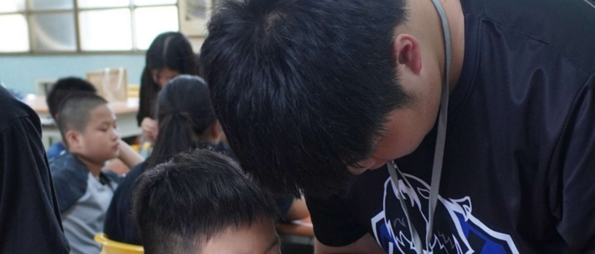
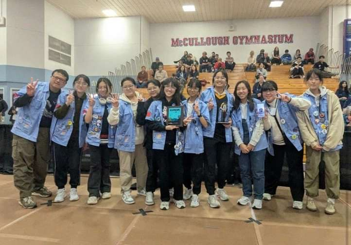
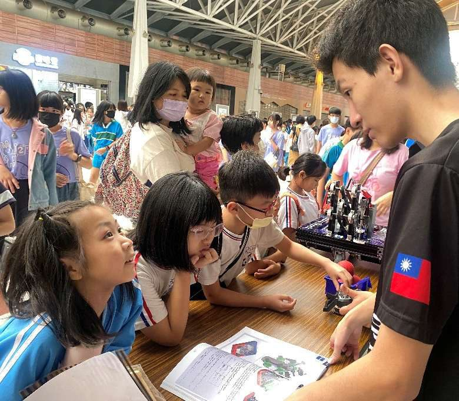
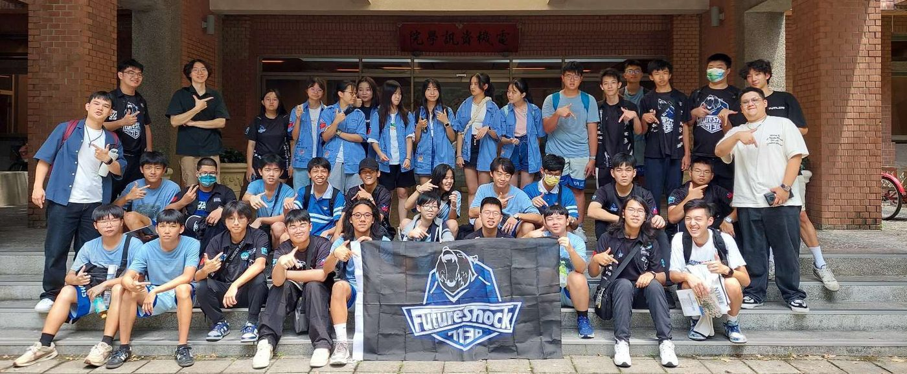
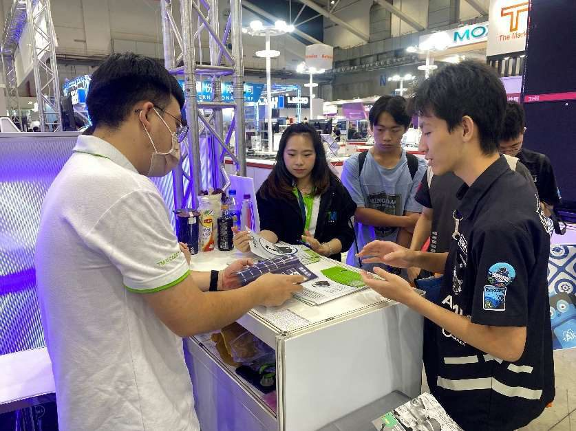
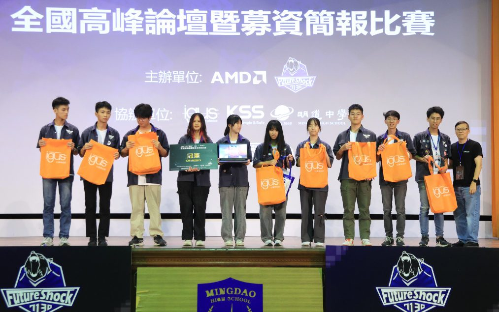
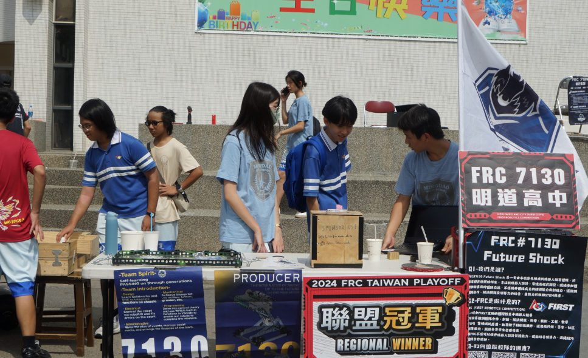

Industry-established activities grew from 10% (20 activities, 2024) to 42% (35 activities, 2026). 產業合作活動比例由 2024 年的 10%（20 場）成長至 2026 年的 42%（35 場）。

We brought hands-on STEM into rural communities through the Shih Cing STEM Camp and Starrynight Education Camp, hosted an engineering showcase on the national Science Train (Ministry of Education × NSTC), and opened our Season Showcase and Annual Season Review to sponsors, parents, and future students. Earlier programs include the Mechanics Camp (100 participants), Technology Month, the OCRC Newbees Robotics Camp (50 participants, up to 200 hrs), and SIG self-organized learning groups with career exploration sessions. 我們透過 Shih Cing STEM 營與 Starrynight 教育營，把動手做的 STEM 教育帶進偏鄉；在教育部 × 國科會的科學列車上舉辦工程展示；並向贊助者、家長與未來隊員公開賽季成果展與年度回顧。早期計畫還包括機械營（100 人）、科技月、OCRC 新蜂機器人營（50 人、長達 200 小時）以及 SIG 自主學習社群與職涯探索講座。

Our structured support program provides rookie and developing teams with technical mentorship, full-field facility access, hardware, and fundraising guidance. Over two seasons we helped establish and support Teams 10390 and 11313 (both all-female teams) and 11229 (one of Taiwan's only community-based FRC teams). Team 10390 earned Rookie All-Star in 2025; Team 11229 earned the same the following season. 這套制度化的支持計畫，為新創與發展中隊伍提供技術指導、完整場地使用、硬體與募資協助。兩個賽季以來，我們協助創立並輔導 10390 與 11313（皆為全女子隊伍）以及 11229（全台少數的社區型 FRC 隊伍）。10390 於 2025 年獲新人全明星獎；11229 於次年同樣獲獎。

Closing the gap between school and career: students visited AMD headquarters in Nangang, toured NTU's Mechanical and Electrical Engineering labs, attended Automation Taipei and TIMTOS, and heard KUKA robotics engineers. We ran a design review workshop with igus Taiwan, a 3D printing workshop with Phrozen, and co-designed an interactive booth at Automation Taipei with MISUMI, where 30+ students demonstrated a student-built AGV to industry professionals. 縮短校園與職涯的距離：學生走進 AMD 南港總部、參訪台大機械與電機研究室、參加台北自動化展與 TIMTOS 工具機展、聆聽 KUKA 機器人工程師分享。我們與 igus 台灣舉辦設計審查工作坊、與 Phrozen 舉辦 3D 列印工作坊，並與 MISUMI 在自動化展共同設計互動攤位——30 多位學生向業界人士展示自製 AGV 機器人。

We initiated the 2025 Taiwan FRC Summit — nine teams, ~100 participants, three themed forums, and a live Sponsorship Pitch Competition, co-organized with AMD, NTNU, and NCU, with industry leaders including igus, KSS, and Tokyo Electron. We ran a cross-school Swerve Drive Workshop (50+ students, hardware donated to participants) and co-organized a robotics forum at the CTCI Smart Robotics Maker Base opening. 我們發起 2025 台灣 FRC 高峰會——九支隊伍、近百人參與、三場主題論壇與現場募資簡報競賽，與 AMD、台師大、中央大學共同主辦，igus、KSS、東京威力科創等業界領袖共襄盛舉。我們也舉辦跨校 Swerve Drive 工作坊（50 多位學生，完成的硬體捐贈給參與隊伍），並在中鼎智慧機器人自造基地開幕時共同主辦機器人論壇。
| Category類別 | People reached觸及人數 | Time invested投入時數 | Media reach媒體觸及 |
|---|---|---|---|
| Community Engagement社群交流 | 69.9% | 33.1% | 40.4% |
| FRC EcosystemFRC 生態系 | 15.5% | 12.0% | 26.5% |
| STEM EducationSTEM 教育 | 10.4% | 19.7% | 18.5% |
| Industry Exposure產業探索 | 7.3% | 35.3% | 14.7% |






Team members carry the FRC spirit into other arenas: the iGEM synthetic biology competition, the Dragon Boat and Soccer Robotics competitions, the Young Diplomats Program, and the TASA Rocket Launch Program. During the pandemic, our members designed and built a disinfection door installed at the school entrance — a 1,200-hour project that reached 8,000 people and sparked our weekly build-video tradition. 隊員把 FRC 精神帶進其他領域：iGEM 合成生物學競賽、龍舟與足球機器人競賽、小小外交官計畫，以及國家太空中心（TASA）火箭發射計畫。疫情期間，隊員自行設計打造消毒門並安裝於校門口——這項 1,200 小時的專案觸及 8,000 人，也開啟了我們每週發布製作影片的傳統。
We are still the first FRC team in Central Taiwan. But we are no longer just a team. We are a platform — one that other teams build on, that students grow through, that alumni return to sustain, and that industry partners invest in because they have seen what it produces. 我們仍是中台灣第一支 FRC 隊伍，但我們早已不只是一支隊伍。我們是一個平台——其他隊伍在其上成長、學生在其中茁壯、校友回流維繫、產業夥伴因為親眼見證成果而持續投資。